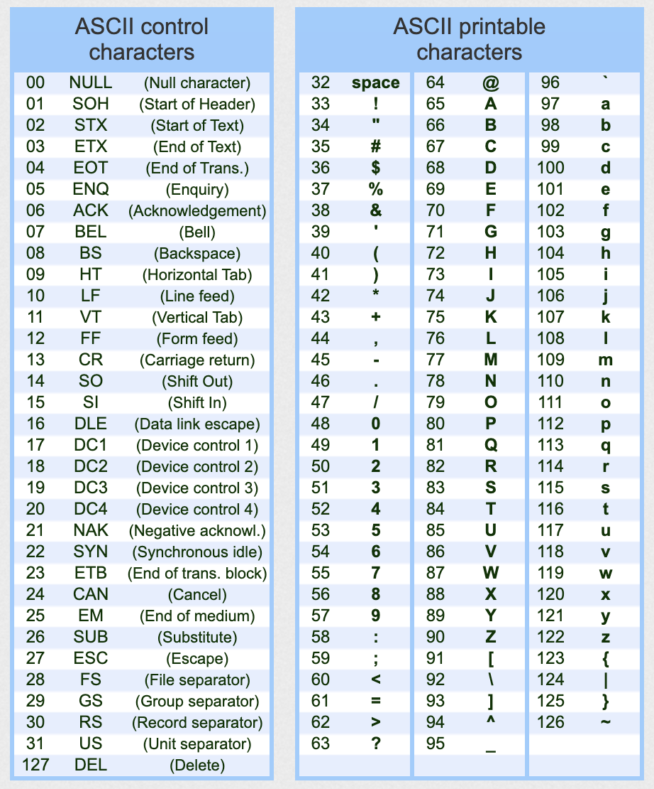

Lecture Notes 12: Strings
Strings
Strings are sequences of characters.
Each character is one of many symbols that the computer knows.
Since the computer knows only 0s and 1s, it may interpret groups of 0s and 1s as numbers or as something else, depending on the file type.
What we know already about Strings
- Indices:
Each character has a specific position in the string. We call this position its index and we start indexing at 0.
For example, the string literal hello world! is composed of the following characters at the following indices:
| 0 |
1 |
2 |
3 |
4 |
5 |
6 |
7 |
8 |
9 |
10 |
11 |
| h |
e |
l |
l |
o |
|
w |
o |
r |
l |
d |
! |
- Access:
Say we have the string hello world! saved in a variable called greeting.
We can "access" or "retreive" (without removing) a character from a String by indicating which index in particular inside the string you are interested in getting.
You do this by using the square bracket notation:
greeting[6]
This would obtain the character in the index equal to 6: character w.
def main():
greeting = 'hello world!'
print(greeting[6])
if __name__ == "__main__":
main()
Try it out here
- Concatenation
We can concatenate strings to make new strings using the + operator, as long as we have a string on either side!
Example:
def main():
str1 = 'hello '
str2 = 'world!'
print(str1 + str2)
str3 = str1 + str2
print(str3)
if __name__ == "__main__":
main()
Try it out here
- the len function:
We can get the length of a String by using the len function:
def main():
str1 = 'hello world!'
print( len(str1) )
# elegant
for c in str1:
print(c, end = " ")
print()
print()
#option 1
for i in range( len(str1) ):
print(str1[i], end = " ")
print()
if __name__ == "__main__":
main()
Try it here
ASCII
The ASCII format, is a table of symbols. Each symbol is saved at a different index so that there is always a link between an integer and one of these symbols:

Converting between the number and symbol
Try the following:
def main():
sym = '#'
print('The symbol is: ' + sym)
print('Its index (in ASCII) is: ', ord(sym) )
print()
num = 62
print('The num is: ', num)
print('Its symbol (in ASCII) is: ' + chr(num) )
if __name__ == "__main__":
main()
Try it
here
Activity 0 [2 minutes]:
Answer the fillowing question:
- Why can we sometimes use concatenation and sometimes we can't?
- How could you use these conversions from ASCII to number and back again to find: The Caesar cipher letter for the letter "x" when shifted forward 5 places?
ASCII is only one part of a much larger table that contains a ton more symbols. That larger table (really a styandard for encoding symbols) called Unicode.
Bonus String Trick
One can apply the multiplication operator to a string in order to cause it to create a copy where it "self concatenates":
str1 = "na"
print(8*str1 + " Batman!")
Try it
Here!
Slicing Basics
Slicing refers to the act of accessing (reading) multiple characters at a time from a string.
The notation is the following:
my_string
[
< start index >
:
< end index >
]
This returns a substring with a copy of the charcters that go from the start index to end index -1
It is crucial to understand that the second parameter is NON INCLUSSIVE!.
Example
my_str = "duckrabbit"
str_len = len(my_str)
print("The length of {:s} is {:d}".format(my_str, str_len) )
sub_str1 = my_str[0:str_len]
print("The substring of {:s}, from 0 to {:d}, is {:s}".format(my_str,str_len, sub_str1) )
Run it
here
Activity 1 [5 minutes]:
Open the Scratch pad and copy the example shown above.
Then, make the following additions:
- create sub_str2 by extracting the word "duck" from my_str;
- print a formatted string with the contents of sub_str2
- create sub_str3 by extracting the word "rabbit" from my_str;
- print a formatted string with the contents of sub_str3
The Slice is a new object
The sliced substring is a new object so modifying this object does not change the original string and vice-versa.
For example:
my_str = "duckrabbit"
print("The contents of my_str are:", my_str)
str_len = len(my_str)
print("The length of {:s} is {:d}".format(my_str, str_len) )
sub_duck = my_str[0:4]
print("The contents of sub_duck are:", sub_duck)
my_str = "overwritten!"
print("The new contents of my_str are:", my_str)
print("The contents of sub_duck after overwritting my_str are:", sub_duck)
Try it
here
Slicing variations
We can use different variations when doing string slicing.
Using negative values for indices
Using negative values in the
end index position indicates an index relative to the end.
For example,
my_str = "duckrabbit"
str_len = len(my_str)
print("The length of {:s} is {:d}".format(my_str, str_len) )
sub_str_neg = my_str[0:-6]
print("The substring of {:s}, from 0 to '-6', is {:s}".format(my_str, sub_str_neg) )
Try it
here
Activity 2 [5 minutes]:
Open the Scratch pad and write code that:
- creates my_str with the word duckrabbit
- print a formatted string with the contents of my_str
- create sub_duck by extracting the word "duck" from my_str;
- create sub_rabb by extracting the word "rabbit" from my_str using negative notation;
- create new_str by concatenating sub_rabb to sub_duck;
- print a formatted string with the contents of new_str
Omitting indices
One can omit the start index, the end index, or both!.
Omitting the start index
my_str = "duckrabbit"
str_omit_start = my_str[:4]
print("The substring of {:s}, with slice [:4], is {:s}".format(my_str, str_omit_start) )
Try it
here
Omitting the end index
my_str = "duckrabbit"
str_omit_end = my_str[4:]
print("The substring of {:s}, with slice [5:], is {:s}".format(my_str, str_omit_end) )
Try it
here
Omitting both indices
This is equivalent to specifying "
from start to finish".
Erroneous indices
- Specifying the start index beyond the end of the string, or beyond the end index, results in an empty string
Example:
print(my_str[4:2]) # start > end (prints newline only)
- Specifying an end index beyond the end of the string is equivalent to specifying the end of the string.
Example:
print(my_str[4:13]) # same as [4:10] (prints rabbit)
The Slicing Stride
There is a third slicing parameter which is optional.
This parameter is the
stride, and it refers to the amount of "skip" to perform after each read.
The default skip is 1: go to the immediate next character.
For example, the following are equivalent:
#these all print "duckrabbit"
print(my_str)
print(my_str[0:10])
print(my_str[0:])
print(my_str[:10])
print(my_str[:])
print(my_str[0:10:1])
A stride of 2
For a stride of 2, we access every other character, depending on the start and end indices specified:
For example:
print(my_str[0:10:2]) #prints dcrbi
print(my_str[1:10:2]) #prints ukabt
[2 minutes]:
Open the Scratch pad and write code that:
- creates my_nums with the string 123456789
- print a formatted string with the contents of my_nums
- create and print sub_odd by extracting all the odd number characters from my_nums;
- create and print sub_even by extracting all the odd number characters from my_nums;
- create and print sub_3s by extracting all the multiples of 3 number characters from my_nums;
String Methods
As we mentioned before, Strings are Objects, and in Python, objects have values inside them as well as member functions we call "Methods".
We can access these by using the dot operator, as in:
< my_str > . < method name > (< method arguments > )
One example we've been using a lot is format, as in:
my_str = "duckrabbit"
str_rabb = my_str[4:]
out_str = "a substring of {:s} is {:s}"
print(out_str.format(my_str, str_rabb) )
Here, we're accessing the
format member method from the string variable
out_str and passing in the arguments
my_str, and
str_rabb
Try it out
here.
The following are some useful String methods.
Remember that you can read more about how to use them in the
Python String API
replace
You might want to edit the contents of a string by "replacing" fragments with a known pattern for another pattern.
However, since strings, once created, cannot be edited, what happens is that a new string is created which can be used to overwrite the old one.
Example:
phrase = "time consumes everything but it is also the best"
phrase = phrase.replace("time", "Yak")
phrase = phrase.replace("but", "and")
phrase = phrase.replace("best", "beast")
print(phrase)
The notation
my_str.replace(<old>, < new >, < count >) only replaces the first
< count > instances of the matched pattern.
find
The following are variations of the use of the
find method:
find(x) -- Returns the index of the first occurrence of item x in the string, else returns -1. x may be a string variable or string literal.
find(x, start) -- Same as find(x), but begins the search at index start.
find(x, start, end) -- Same as find(x, start), but stops the search at index end - 1:
rfind(x) -- Same as find(x) but searches the string in reverse, returning the last occurrence in the string
Examples:
print("abracadabra".find('abra')) # Returns 0
print("abracadabra".find('dab')) # Returns 6
print("abracadabra".find('yak')) # Returns -1
print("abracadabra".find('ra')) # Returns 2
print("abracadabra".find('ra', 3)) # (after 3) Returns 9
print("abracadabra".find('ra', 3,7)) # (in 3,7) Returns -1
print("abracadabra".rfind('ra')) # (reverse) Returns 9
count
The method
count(x) returns the number of times x occurs in the string:
phrase = "The future ain't what it used to be."
# next line prints 8
print("Number of words in '{:s}' is {:d}".format(phrase,phrase.count(" ")+1) )
Questions about the String's format
You can use some methods to ask questions about the string:
- isalnum()
- isdigit()
- islower()
- isupper()
- isspace()
- startswith(x)
- endswith(x)
New strings with modifications
You can use create new strings with the following methods:
- capitalize()
- lower()
- upper()
- strip()
- title()
For example, one creates a new string when capitalizing a base one:
my_str = "asap"
new_str = my_str.upper()
print(new_str)
Chaining method calls
sequences of calls can be done on each resulting string. Since one call results in a string, the next call can be simply appended to the previous one.
Activity 4 [2 minutes]:
What does the following program print?
my_str = " nEVer tHe leSs "
print ( my_str.strip().replace(" ", "").title() )
Splitting and Joining Strings
Another typical task is to separate a string into a list of component substrings, or tokens.
split
The
split method can achieve this by specifying the character(s) that are to be considered the
separators between the tokens.
We will learn how to work with lists next lecture, but for now, we'll just print the results directly (which
print ca handle).
Let's do some splits:
Example:
phrase = "time consumes everything but it is also the best"
tokens = phrase.split()
print("the phrase '{:s}' is composed of the tokens: {}".format(phrase, tokens))
Try it
here
Activity 5 [2 minutes]:
What happens if you change the input to split to the space: " "?
You can use different tokens (I actually wrote "Tolkiens" there!):
url = "https://frankpablo.github.io/classes/csc111/lectures/lectureNotes10.html"
tolkiens = url.split("/")
print("the url '{:s}' is composed of the tokens: {}".format(url, tolkiens))
Try it
here
You can also separate into tokens composed of strings (longer than 1 character).
Example:
quote = "Baseball is ninety percent mental and the other half is physical."
tokens = quote.split("al")
print("the quote '{:s}', separated by 'al' is composed of the tokens: {}".format(quote, tokens))
Try it
here
join
Another useful task is to join tokens into a longer string.
The format is:
< separator > . join ( < list of tokens > )
Example:
num_str = "1 2 3 4 5 6 7 8 9"
#making the tokens
tokens = num_str.split(" ")
print("the num_str '{:s}'\nis composed of the tokens:\n{}".format(num_str, tokens))
print()
# joining with '+'
num_expr = "+".join(tokens)
print("expression:",num_expr)
# you can use this for something!
print( eval(num_expr) )
Try it
here
Next Wednesday: Midterm
How to prepare:
- Study the notes and exercises
- Bring questions for Friday!
- Themes:
- Distinguishing data types
- Understanding assignment and variable naming
- Program tracing: given a program, and some possible input, you must be able to trace the program execution (using your miind, paper, and pencil only)
- Built-in functions: what do they do (the ones we've used from these)
- Writing Functions: given a function description, write it; given a function, describe its parts and how it works; Call functions with functions as arguments (finction composition).
- Conditionals: how to write them to ask the right questions and to reach the right blocks; nested if statements and combining conditions.
- Common errors (Exceptions) when coding (indentation, concatenating str and int, index out of range, variables not defined, etc)
- Common logical errors (Bugs): = vs ==, unreachable elif or else, not using integer division, etc.
- Common string operations: concatenation, access, slicing, and joining
- Using string methods
- Common list operations: creating, editing, appending, slicing
- Using list methods
Before next class (Friday)
[Due for everyone]
ZyBooks Sections 6.1, 6.2
Assignment 02 (Replit); due on 09/29 before 11:59 PM
[Optional] TODO